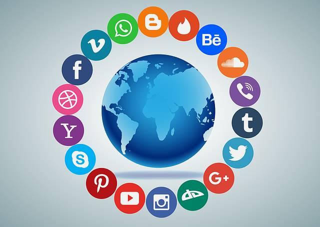

Hallo,
Saya Adimas Bayu Aditya
Selamat Datang di halaman landing page saya yang berisi beberapa
informasi dan tugas dari pendidikan agama islam 6

Proses Pembatalan Syahadatain di Media Sosial
Paparan terhadap Informasi yang Salah Informasi yang tidak sesuai
dengan ajaran Islam sering kali beredar luas di media sosial.
Misalnya, berita hoaks, ajaran sesat, atau konten yang meragukan
kebenarannya dapat memengaruhi keyakinan seseorang, terutama jika
ia tidak memiliki dasar ilmu agama yang kuat.
Normalisasi Perilaku yang Tidak Islami Banyak konten di media
sosial yang mempromosikan gaya hidup yang bertentangan dengan
syariat Islam, seperti konsumsi alkohol, pergaulan bebas, atau
pakaian yang tidak menutup aurat. Jika terus-menerus terpapar,
seseorang dapat menganggap perilaku ini sebagai sesuatu yang
wajar.
Kurangnya Kontrol Diri Media sosial sering kali menjadi sarana
untuk menyebarkan hal-hal yang melalaikan, seperti gosip, fitnah,
atau hiburan yang tidak mendidik. Hal ini dapat menjauhkan
seseorang dari mengingat Allah dan menjalankan ibadah dengan
khusyuk. terlebih jika mereka mewajarkan ajaran yang tidak benar,
atau tidak sesuai syariat islam. ini dapat mempengaruhi keislaman
atau keimanan seseorang. dan bahkan dapat menjadi penyebab
pembatalan syahadatain karena ia mempercayai tuhan selain Allah
Alasan Mengapa Hal tersebut termasuk praktik pembatalan
syahadatain
Jika seseorang menyebarkan dan mempercayai seperti ramalan
horoskop atau kartu tarot yang sedang banyak beredar saat ini. itu
juga dapat masuk kedalam kategori syirik, seperti yang Allah
firmankan
-
QS. An-Nisa': 48 & 116 yang menegaskan Allah tidak mengampuni
syirik, dan QS. Luqman: 13 yang menyebutnya sebagai kezaliman
terbesar
-
Surat An-Nur Ayat 21: Melarang mengikuti langkah-langkah setan yang
menyuruh mengerjakan perbuatan keji dan mungkar
-
Surat An-Nahl Ayat 25: Menyebutkan orang-orang yang menyesatkan
orang lain tanpa ilmu akan menanggung dosa berlipat ganda
Referensi
https://kabbatanghari.baznas.go.id
/berita/news-show/pengaruh-media-sosial-terhadap-aqidah-bagaimana-memfilter-konten-yang-sesuai-dengan-nilai-islam/13681